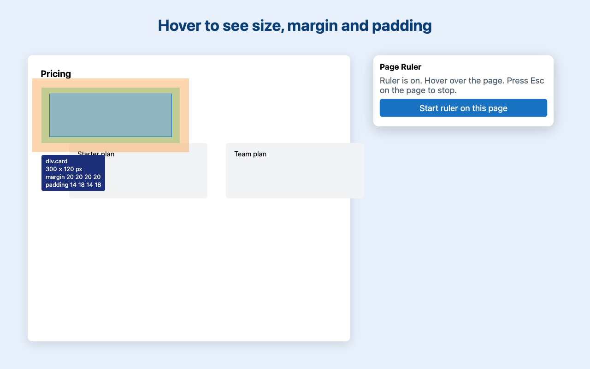
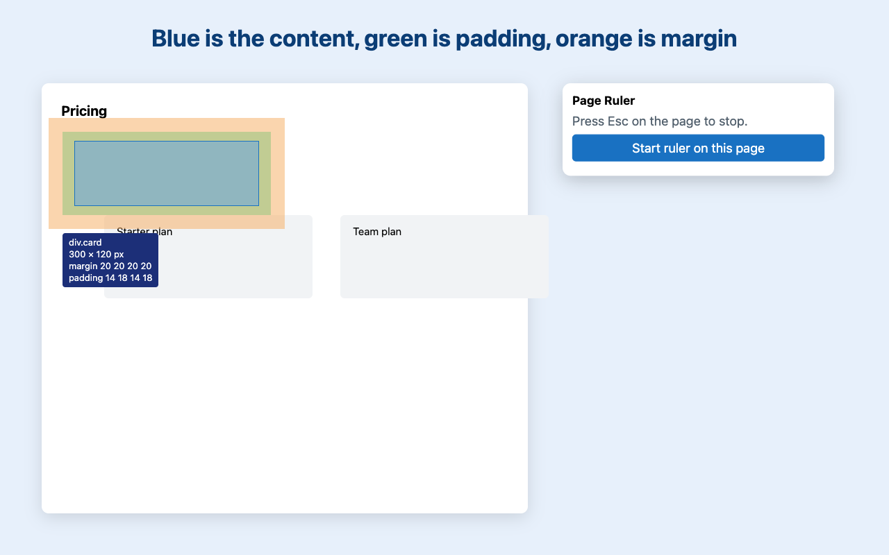
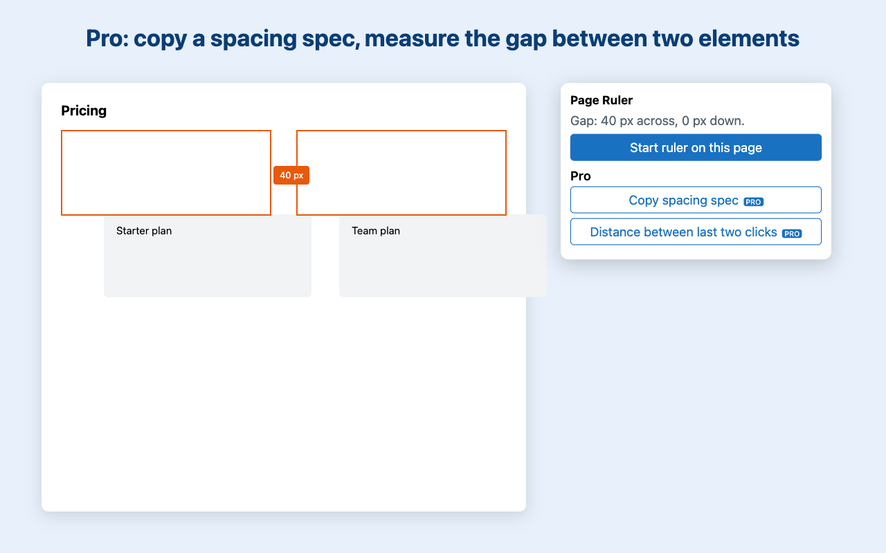

Hover any element on a web page to see its size, margin and padding. Click to select and copy a spacing spec.



Hover over any element on a web page and see its size, margin and padding drawn as coloured boxes. Made for designers, front-end developers and QA who check spacing against a mock-up.
How to use
1. Open the page you want to check.
2. Click the extension icon, then Start.
3. Move the mouse over the page. Press Esc on the page to stop.
Features
- Width and height in pixels, shown next to the element
- Margin in orange, padding in green, content in blue
- Click an element to outline it
- Works on any normal web page
Privacy: the extension works on the page you click it on; nothing about your browsing is sent anywhere.
Support: frankjgilroy@gmail.com
Free to use. Pro: $3.99 per month (pro-monthly) or $29 once (pro-lifetime).